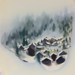

DeepFloyd Diffusion Model
The first section of the following project uses the pretrained DeepFloyd model. To get a sense of the model, we can first take a sampling of iamges from a selection of text prompts and inference steps all using the seed "180". As is evident in images, when lower inference steps are used, the images tend to have a smooth quality to them, and when higher inference steps are used the images become more detailed representations of the prompt.
"An oil painting of a snowy mountain village"
num_inference_steps = 10
num_inference_steps = 20

num_inference_steps = 50
"A man wearing a hat"
num_inference_steps = 10
num_inference_steps = 20

num_inference_steps = 50
"A rocket ship"
num_inference_steps = 10
num_inference_steps = 20

num_inference_steps = 50
Sampling Loops
Initially, the goal is to generate high-quality images by progressively denoising noisy inputs by using pretrained DeepFloyd denoisers. In diffusion models, a clean image is corrupted by adding noise iteratively until it becomes pure noise. The reverse process removes this noise step by step, using the model's predictions to recover the clean image. Image generation begins with pure noise sampled from a Gaussian distribution. The model predicts and removes noise at each step, gradually refining the image until it is clean.
Forward Process
The forward process in diffusion models is used to progressively add noise
to a clean image. This process is mathematically defined using a Gaussian distribution
\( q(x_t|x_0) \), where the mean is scaled by \( \sqrt{\bar{\alpha}_t}x_0 \) and the
variance is proportional to \( (1 - \bar{\alpha}_t) \). The noisy image \( x_t \) at
timestep \( t \) was computed using the formula \( x_t = \sqrt{\bar{\alpha}_t}x_0 +
\sqrt{1 - \bar{\alpha}_t}\epsilon \), where \( \epsilon \) is sampled from a standard
normal distribution \( N(0,1) \). As \( t \) increases, the amount of noise added to the
image increases. For small values of \( t \), \( \bar{\alpha}_t \) remains close to 1,
resulting in less noise, while for larger values of \( t \), \( \bar{\alpha}_t \) approaches
0, adding more noise. The forward process
was implemented using the variable alphas_cumprod, which contains precomputed
values of \( \bar{\alpha}_t \) for timesteps \( t \in [0, 999] \). A test image, resized to
64x64 pixels, was used to demonstrate the process. The forward process was applied at specific
timesteps (\( t = 250, 500, 750 \)) to generate progressively noisier versions of the image.
Berkeley Campanile

Noisy Campanile t = 250

Noisy Campanile t = 500

Noisy Campanile t = 750

Clasical Denoising
The first way we can attempt to remove the noise from the image is by using a classical denoising method like gaussian blur filtering. As the following results show, achieving a good result with this method is close to impossible with this methedology.
Noisy Campanile t = 250
Noisy Campanile t = 500
Noisy Campanile t = 750
Gaussian Denoising t = 250
Gaussian Denoising t = 500
Gaussian Denoising t = 750
One-Step Denoising
As we can see classical methods are not able to remove the noise from the image, we can instead attempt to remove the noise from the image using one step denoising. To do this, we use a preterained diffusion model to recover something closer to the clean image.
Noisy Campanile t = 250
Noisy Campanile t = 500
Noisy Campanile t = 750
One-Step Denoising t = 250
One-Step Denoising t = 500
One-Step Denoising t = 750
Iterative Denoising
To further improve this process we can implement iterative denoising. In this method the core denoising step uses a formula that calculates \(x_{t'}\) (the less noisy image) from \(x_t\) (the current noisy image). The formula is: $$ x_{t'} = \frac{\sqrt{\bar{\alpha}_{t'}\beta_t}}{1-\bar{\alpha}_t}x_0 + \frac{\sqrt{\alpha_t(1-\bar{\alpha}_{t'})}}{1-\bar{\alpha}_t}x_t + v_\sigma $$ This formula works by balancing our clean image estimate (\(x_0\)), the current noisy image (\(x_t\)), and a variance term (\(v_\sigma\)), with their relative contributions controlled by the alpha and beta parameters. The weights are determined by the alphas and betas, where \(\alpha_t = \bar{\alpha}_t/\bar{\alpha}_{t'}\) and \(\beta_t = 1-\alpha_t\). The \(\bar{\alpha}_t\) values come from alphas_cumprod. This weighting ensures a smooth transition between noise levels, with the contribution of the estimated clean image increasing as we move to lower noise levels. Each iteration of our denoising loop applies this formula, stepping from one strided timestep to the next, progressively producing cleaner images until we reach the final result.
Noisy Campanile t = 90
Noisy Campanile t = 240
Noisy Campanile t = 390
Noisy Campanile t = 540
Noisy Campanile t = 690
Original Campanile
Iterative Denoised
One-Step Denoised
Gaussian Blurred
Diffusion Model Sampling
Another thing we can do with iterative denoising is to start from pure noise, then by applying the denoising process iteratively, we can essentially create an image out of nothing. The following are 5 results from this process.
Sample 1
Sample 2
Sample 3
Sample 4
Sample 5
Classifier Free Guidance (CFG)
The iterative denoising process often produces poor results, sometimes generating nonsensical images. To improve quality, Classifier-Free Guidance (CFG) combines conditional and unconditional noise estimates. The following formula used is: $${\epsilon} = \epsilon_{u} + \gamma (\epsilon_{c} - \epsilon_{u})$$ Here, \(\gamma\) is the guidance scale. When \(\gamma\) = 0, the estimate is purely unconditional; at \(\gamma\) = 1, it is fully conditional. For \(\gamma\)>1, higher-quality images are often produced. The denoising process is modified to include an unconditional noise estimate using an empty prompt embedding, as the model is trained to handle this case. The following are 5 results from this improved process.
Sample 1 with CFG
Sample 2 with CFG
Sample 3 with CFG
Sample 4 with CFG
Sample 5 with CFG
Image-to-Image Translation
In this implementation, we used a combination of adding noise to an existing image and denoising it to effectively make edits to the image. The extent of the edit depends on the amount of noise added: more noise leads to larger edits as the diffusion model becomes more "creative" during the denoising process. This is because the denoising process forces the noisy image back onto natural images, allowing the model to "hallucinate" or generate new details. Using the SDEdit algorithm, we applied this process to the several images. By adding varying levels of noise and denoising without any conditioning, we generated a series of images that progressively resembled the test image as the noise level decreased. Starting indices of [1, 3, 5, 7, 10, 20] steps were used for the denoising process.
SDEdit i_start=1
SDEdit i_start=3

SDEdit i_start=5
SDEdit i_start=7
SDEdit i_start=10
SDEdit i_start=20
Campanile
SDEdit i_start=1
SDEdit i_start=3
SDEdit i_start=5
SDEdit i_start=7
SDEdit i_start=10
SDEdit i_start=20
Lenny
SDEdit i_start=1
SDEdit i_start=3
SDEdit i_start=5
SDEdit i_start=7
SDEdit i_start=10
SDEdit i_start=20
Latte
Editing Hand Drawn and Web Images
The above process works particularly well if you start with nonrealistic images. The following are a repeat of this process with a mix of nonrealistic and hand-drawn images.
Inpainting
Inpainting involves modifying an image based on a binary mask. Given an image and a mask, the same process we have been using generates new content wherever the mask equals 1, while preserving the original content where the mask equals 0.
Campanile
Mask

Hole to Fill

Campanile Inpainted
Lenny
Mask
Hole to Fill
Lenny Inpainted
Latte
Mask
Hole to Fill
Latte Inpainted
Image-to-Image Translation
We can perform the same process as image-to-image translation, but with text prompts, so that the model can start from the text prompt and slowly become more like the target image.
SDEdit i_start=1
SDEdit i_start=3
SDEdit i_start=5
SDEdit i_start=7
SDEdit i_start=10
SDEdit i_start=20
Campanile
SDEdit i_start=1
SDEdit i_start=3
SDEdit i_start=5
SDEdit i_start=7
SDEdit i_start=10
SDEdit i_start=20
Lenny
SDEdit i_start=1
SDEdit i_start=3
SDEdit i_start=5
SDEdit i_start=7
SDEdit i_start=10
SDEdit i_start=20
Latte
Visual Anagrams
Visual Anagrams use diffusion models to create optical illusions by blending two prompts. An image is denoised with one prompt, for example: "an oil painting of an old man" to compute one noise estimate, while its flipped version is denoised with another prompt, say "an oil painting of people around a campfire". The flipped estimate is aligned, averaged with the first, and used for reverse diffusion, generating an image that changes appearance based on its orientation. This process is done according to the following equation: \[ \epsilon_1 = \text{UNet}(x_t, t, p_1) \] \[ \epsilon_2 = \text{flip}(\text{UNet}(\text{flip}(x_t), t, p_2)) \] \[ \epsilon = \frac{\epsilon_1 + \epsilon_2}{2} \]
An Oil Painting of an Old Man
A Photo of a Man
An Oil Painting of a Snowy Mountain Village
An Oil Painting of People Around a Campfire
A Lithograph of Waterfalls
A Lithograph of a Skull
Hybrid Images
Factorized Diffusion was used to create hybrid images by combining elements of two distinct text prompts. The process involves generating two noise estimates using a diffusion model, each corresponding to a specific prompt. A composite noise estimate is then created by blending the low frequencies of one noise estimate with the high frequencies of the other. The algorithm to do so is defined as: \[ \epsilon_1 = \text{UNet}(x_t, t, p_1), \quad \epsilon_2 = \text{UNet}(x_t, t, p_2) \] \[ \epsilon = \text{lowpass}(\epsilon_1) + \text{highpass}(\epsilon_2) \]
Hybrid Image of a Skull and Waterfalls
Hybrid Image of Easter Island Moai and a Forest
Hybrid Image of a Dog and a Starry Sky
Training a Single Step Denoising UNet
Given a noisy image \( z \), we aim to train a denoiser \( D_\theta \) such
that it maps \( z \) to a clean image \( x \). To do so, we can optimize over an L2 loss:
\[
L = \mathbb{E}_{z,x} \|D_\theta(z) - x\|^2
\]
The operations of this UNet are defined in the following diagrams:


To train our denoiser, we need to generate training data pairs of \( (z, x) \), where each \( x \) is a clean MNIST digit. For each training batch, we can generate pairs using the following noising process: \[ z = x + \sigma \epsilon, \quad \text{where } \epsilon \sim N(0, I). \] The result of this noising process looks like the following:
We can now train our model to be able to perform the denoising.
Training Loss
Results After 1 Epoch
Results After 5 Epochs
The model has been trained for \(\sigma = 0.5 \). The following are results from noise levels that it was not trained on.
Training a Diffusion Model
To implement diffusion with a U-Net model, the process is designed to predict the added noise \(\epsilon\) rather than the clean image \(\mathbf{x}\). This adjustment simplifies the training objective, transitioning the loss function from predicting \(\mathbf{x}\) to directly minimizing the difference between the predicted noise and the true noise. The final loss function used is: \[ L = \mathbb{E}_{\mathbf{x},\epsilon}\|\epsilon_\theta(z) - \epsilon\|^2 \] The training process involves iteratively denoising an image from pure noise \(\epsilon \sim N(0, I)\) to a realistic image. At each timestep \(t\), a noisy version of the image, \(\mathbf{x}_t\), is generated as a weighted combination of the clean image \(\mathbf{x}_0\) and noise \(\epsilon\), with weights determined by the variance schedule parameters \(\overline{\alpha}_t\) and \(1 - \overline{\alpha}_t\). This is calculated using the following equation: \[ \mathbf{x}_t = \sqrt{\overline{\alpha}_t}\mathbf{x}_0 + \sqrt{1 - \overline{\alpha}_t}\epsilon \] A variance schedule \(\beta_t\) is constructed with values linearly spaced from \(\beta_0 = 0.0001\) to \(\beta_T = 0.02\) over \(T\) timesteps. Using \(\beta_t\), the corresponding \(\alpha_t\) is defined as \(\alpha_t = 1 - \beta_t\), and the cumulative product of \(\alpha_t\) is used to compute \(\overline{\alpha}_t\) for each timestep: \[ \overline{\alpha}_t = \prod_{s=1}^t \alpha_s \] These parameters ensure that \(\overline{\alpha}_t\) is close to 1 for small \(t\), representing less noise, and close to 0 for large \(t\), representing pure noise. The denoising process uses a single U-Net \(\epsilon_\theta\) conditioned on the timestep \(t\). The U-Net is trained to predict the noise \(\epsilon\) added to \(\mathbf{x}_0\), allowing it to iteratively denoise the input. The final objective function minimizes the mean squared error between the predicted and true noise: \[ L = \mathbb{E}_{\mathbf{x}_0,\epsilon},t\|\epsilon_\theta(\mathbf{x}_t, t) - \epsilon\|^2 \] This approach avoids the need for training separate models for each timestep by using a single model conditioned on the timesteps. We also need to inject a scalar \(t\) into the U-Net to condition it. This was done according to the following diagrams:

This diagram uses an FCBlock (fully connected block) to inject the timestep into the U-Net. The FCBlock is defined as follows:

Now to train the time-conditioned UNet, we pick a random image from the training set, a random timestep \(t\), and train the denoiser to predict the noise in \(\mathbf{x}_t\). We repeat this for different images and different t until the model converges. And if we sample from the UNet we get the following results:
To improve the results and give us greater control over image generation, we can optionally
condition our UNet on the digit class (0-9). This requires adding two additional FCBlocks to the UNet.
Training and sampling from the class-conditioned UNet is shown below is almost identical to the time-conditioned UNet.
The improved results from this process are shown below: